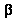
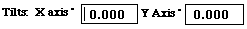
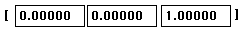
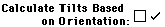

Brings up
a dialog box which explains  and the different Stage
Types.
 If
the stage control has been properly setup, these values will correspond
to the tilts on an experimental goniometer. Changing these values and clicking
on will calculate the new orientation of the
crystal.
Alternatively, inputting the UVW values for the given Zone Axis into  and clicking on  will cause a new set of
tilts to be calculated. NOTE: These boxes will accept floating point values
for the UVW's. The user may use the button to achieve
the same effect.
When in an Single Crystal Object, such as the Stereogram, the SAD/CBED/Laue
etc., Clicking and moving the mouse in the plot will cause Desktop to update
both the orientation and the tilts to correspond to the mouse location.
Use of the Arrow Keys will also cause the Crystal to rotate in the
direction indicated by the arrow keys. IT WILL ALSO UPDATE THE PLOT.
Using this option, obviates the Cancel key.
Clicking on the button will cause the program to
update the orientation and tilts of the current object to the new values.
Again, the CANCEL key has no function after using this option.
Activating the check box changes the Dialog Box
to the following format and gets Desktop ready to orient a crystal with
respect to the goniometer and the goniometer with respect to the screen.
See the How to section: How
To Determine Experimental Tilts for more detail.